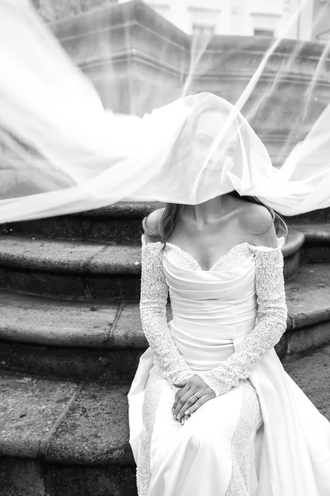
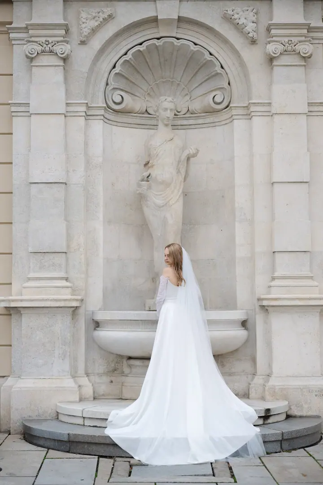

Svatební fotografie
Nadčasové a přirozené fotografie zaměřené na emoce, atmosféru a skutečné okamžiky. Balíčky sestavuji podle času, který na svatbě strávím, a rád je upravím podle vašich představ.

Svatební a profesionální fotograf
Jmenuji se Lukáš Navara a jsem svatební fotograf z Olomouce. Fotím svatby po celé České republice i v zahraničí a zajímají mě hlavně emoce, atmosféra a skutečné okamžiky.
Zeptat se na termín
Nadčasové a přirozené fotografie zaměřené na emoce, atmosféru a skutečné okamžiky. Balíčky sestavuji podle času, který na svatbě strávím, a rád je upravím podle vašich představ.
Žiji a pracuji v Olomouci, ale za svými klienty cestuji po celé České republice, po Evropě i kamkoli do světa. Fotografii se věnuji přes 20 let a svatby jsou pro mě emoce, radost a společně prožívané štěstí.
Individuální přístup je pro mě základ. Než vám nabídnu balíček, potřebuji v mailové komunikaci zjistit, v jakém duchu se vaše svatba ponese. Chci, abyste si den užili a s úsměvem si ho připomínali i za 40 let.
Kromě svateb fotím business portréty, firemní a reklamní fotografii a interiéry hotelů, apartmánů nebo restaurací. Pracuji pro jednotlivce, firmy i značky v Olomouci a na Moravě i jinde.

Pošlete mi e-mail nebo zavolejte. Během mailové komunikace si nejdřív zjistím vaši představu o tom, v jakém duchu se bude svatba odehrávat.
Nabídnu vám balíčky sestavené podle času, který na svatbě strávím. Když bude potřeba, balíček upravím přesně podle vašich představ.
Pokud chcete, můžeme začít partnerským focením. Poznáme se, vyzkoušíte si focení a zároveň vzniknou fotky třeba na svatební oznámení.
Ve svatební den jsem s vámi a sleduji emoce, atmosféru a skutečné okamžiky. Vy se můžete naplno věnovat sobě a svým hostům.
Ano. Působím hlavně v Olomouci a na Moravě, ale za klienty pravidelně cestuji po celé České republice, po Evropě i do zahraničí.
Balíčky se odvíjí od času, který s vámi na svatbě strávím. Pokud vám žádný úplně nesedí, rád ho upravím podle vašich představ.
Určitě. Inscenovanou svatební fotografii můžete zvolit samostatně, jako doplněk k focení svatebního dne nebo třeba v netradiční destinaci.
Fotíme v přírodě, u vás doma nebo u mě v ateliéru a focení zabere zhruba dvě hodiny. Kompozici snímků vždy vymyslíme společně.